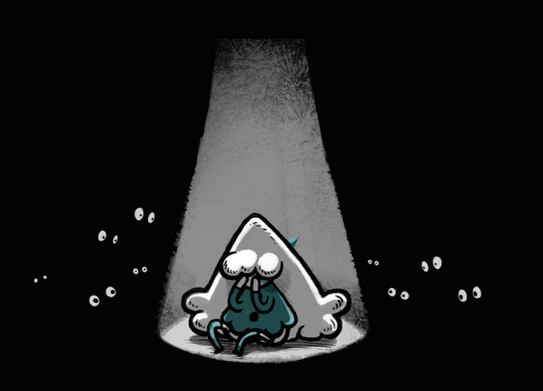

Malisse
Malisse is a two-player cooperative game played with two controllers, or single-player with a single controller. You could also play it two players on the same controller!
Play it.
"Help Malisse along, make sure the path stays clear so that everyone, including the rabbit buddies, may pass unscathed!"
Available for Windows and Mac. It was produced during ToJam 9 by Les Collegiennes in 2014. Side image and logo by Dom2d.

They always take team photos for the event, the one above was ours. It makes me laugh, everytime. From left to right, Pierre-Luc Poirier, Dom2d, Devine Lu Linvega, Rek Bellum and Renaud Bedard.